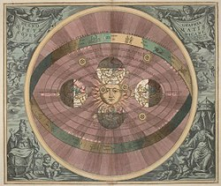

4. Աշխարհի երկրակենորոն և արեգակնակենտրոն համակարգեր
Արևակենտրոն համակարգ
Արևակենտրոն համակարգ, արևակենտրոն ուսմունք, ուսմունք, ըստ որի Երկիրը և մյուս մոլորակները պտտվում են իրենց առանցքի և Արեգակի շուրջը։
Արեգակի, Երկրի և մոլորակների փոխդասավորությունն ու շարժումը հետաքրքրել է հին հույն փիլիսոփաներին։ Դեռևս մ․թ․ա․ IV դ․ Հերակլիդես Պոնտացին ընդունում էր Երկրի պտույտն իր առանցքի շուրջը։ Այն փաստը, որ Մերկուրին ու Վեներան Արեգակից շատ չեն հեռանում, նրան թույլ տվեց ենթադրել, որ այդ մոլորակները պտտվում են Արեգակի շուրջը, իսկ վերջինս էլ, երկնային մյուս մարմինների հետ՝ Տիեզերքի կենտրոնում գտնվող Երկրի շուրջը (Եգիպտական համակարգ)։ Այս համակարգը փաստորեն երկրակենտրոն համակարգի և արևակենտրոն համակարգի զուգակցումն էր։ Հայտնի է եղել նաև կրակակենտրոն համակարգը, ըստ որի Տիեզերքի կենտրոնում գտնվում է կրակը («Զևսի կրակարանը»), որի շուրջը պտտվում են Երկիրը, Լուսինը, Մերկուրին, Վեներան, Արեգակը, Մարսը, Յուպիտերը, Սատուրնը և անշարժ աստղերի ոլորտը։ Ենթադրվում էր, որ Երկրի ու կրակի միջև գոյություն ունի հակաերկիր և, քանի որ դրանց պտտման պարբերությունները նույնն են, Երկրից կրակը չի երևում։ Արեգակի վրա ընկած լույսն ու ջերմությունը հավաքվում և բաշխվում են մոլորակներին, իսկ գիշերվա ու ցերեկվա հերթափոխությունը բացատրվում էր Երկրի առանցքային պտույտով։

Մ․թ․ա․ III դ․ Արիստարքոս Սամոսացին առաջ է քաշում արևակենտրոն համակարգի վարկածը, որի համաձայն Արեգակը Երկրից մեծ է 300 անգամ, հետևաբար՝ ավելի շուտ փոքր Երկիրը պետք է պտտվի մեծ Արեգակի շուրջը, քան՝ հակառակը։ Երկիրը միաժամանակ երկու պտույտ է կատարում, մեկ տարի պարբերությամբ՝ Արեգակի շուրջը, մեկօրյա պարբերությամբ՝ իր առանցքի շուրջը։ Արեգակը աստղ է և նրա արտակարգ մեծ ու պայծառ երևալը Երկրից ունեցած փոքր հեռավորության հետևանք է միայն։ Մյուս աստղերի շուրջը ևս պետք է լինեն բնակեցված մոլորակներ։ Արիստարքոս Սամոսացին փաստորեն արևակենտրոն համակարգի հիմնադիրն է՝ «Հին աշխարհի Կոպեռնիկոսը»։ Մ․թ․ա․ II դ․ էրատոսթենեսը ոչ միայն ընդունել է Երկրի գնդաձևությունը, այլև առաջին անգամ չափել միջօրեականի երկարությունը և ստացել ժամանակակից տվյալներին բավական մոտ արդյունք։
Արևակենտրոն համակարգի օգտին առաջ քաշված այս վարկածները դեռևս չհերքեցին Երկրակենտրոն համակարգի գաղափարը, և վերջինս շարունակեց մնալ իշխող ուսմունք։ V դարում Մարցիան Կապելյան կրկին առաջ է քաշում Հերակլիդեսի ուսմունքը։ Անանիա Շիրակացին բացատրում է Լուսնի փուլերի առաջացումը, մակընթացության և տեղատվության երևույթը համարում Լուսնի ազդեցության արդյունք։ Բիրունին ընդունում է Երկրի շարժման հնարավորությունը։ Լեոնարդո դա Վինչին ժխտում է Տիեզերքի կենտրոնի գոյությունը, Երկիրը համարում Լուսնի ու մոլորակների նման սովորական մարմին, ընդունում ոչ միայն նրա առանցքային պտույտը, այլև տեղափոխվելը։ Երկրակենտրոն համակարգին փոխարինող նոր և հիմնավորված ուսմունք առաջ է քաշվում միայն XVI դ․ կեսին՝ Ն․ Կոպեռնիկոսի «Երկնային ոլորտների պտույտի մասին» աշխատության մեջ։ Ըստ Կոպեռնիկոսի, Տիեզերքի կենտրոնում գտնվում է Արեգակը, որի շուրջը համակենտրոն շրջանային ուղեծրերով պտտվում են Մերկուրին, Վեներան, Երկիրը (նրա շուրջն էլ պտտվումէ Լուսինը), Մարսը, Յուպիտերն ու Սատուրնը, անշարժ աստղերի ոլորտը։ Երկիրը սովորական մոլորակ է, որը մեկօրյա պարբերությամբ պտտվում է իր առանցքի և մեկ տարի պարբերությամբ՝ Արեգակի շուրջը։ Պտտման առանցքը ուղեծրի հարթության հետ կազմում է 66°, 5 անկյուն և տարածության մեջ մնում է ինքն իրեն զուգահեռ։ Կոպեռնիկոսը բացատրել է տարվա եղանակների, գիշերվա և ցերեկվա առաջացումը, պրեցեսիայի երևույթը, որոշել մոլորակների փոխադարձ հեռավորությունը։ Արևակենտրոն ուսմունքի դեմ պայքար ծավալվեց XVI դ․վերջին, երբ գիտնականների մի մասը ոչ միայն ընդունեց արեգակնային համակարգը, այլև սկսեց զարգացնել այն։ 1616-ին կաթոլիկ եկեղեցին որոշում է Կոպեռնիկոսի աշխատությունը մտցնել արգելված գրականության ցուցակում ու խստորեն պատժել արևակենտրոն համակարգով զբաղվողներին և այն պրոպագանդողներին։ Կոպեռնիկոսի արևակենտրոն ուսմունքը վերջնականորեն հիմնավորվում ու ճշտվում է Ջ․Բրունոյի, Գ․Գալիլեյի, Յ․Կեպլերի և Ի․Նյուտոնի ուսումնասիրություններով ու լրացումներով։ Բրունոն հանգեց աշխարհի անվերջության գաղափարին, արեգակնային համակարգի դեռևս անհայտ մոլորակների գոյությանը։ Գալիլեյը հայտնաբերեց Յուպիտերի չորս արբանյակները, Վեներայի փուլերը և ապացուցեց, որ այդ մոլորակները պտտվում են Արեգակի շուրջը։ Սրանք կարևոր փաստեր էին արևակենտրոն համակարգի օգտին։ Բանն այն է, որ ոմանք չէին ընդունում Երկրի շարժումը, պատճառաբանելով, որ այդ դեպքում կխախտվեր Երկիր-Լուսին համակարգը, մինչդեռ պարզվեց, որ Յուպիտերն ունի չորս Լուսին, ինքն էլ պտտվում է, բայց համակարգը չի խախտվում։ Կեպլերը հայտնագործեց մոլորակների շարժման օրենքները, իսկ Նյուտոնը՝ տիեզերական ձգողության օրենքը։ Ներկայումս արևակենտրոն համակարգի փորձով և դիտումներով հաստատված գիտական ճշմարտություն է։ Երկրի առանցքային պտույտի ապացույցներից են Ֆուկոյի ճոճանակի փորձը, ազատ ընկնող մարմնի շեղումը դեպի արևելք և այլն։ Արեգակի շուրջը Երկրի պտույտի ապացույցներից են աբեռացիայի երևույթը (Բրադլեյ, 1728) և լուսատուների պարալաքսային շարժումները (Ստրուվե, 1838)։ Արևակենտրոն ուսմունքի արձագանքը Հայաստան է հասել հարյուր տարի ուշացումով։ Երևանի Մեսրոպ Մաշտոցի անվ․ Մատենադարանի № 8120 ձեռագրի (XVII դ․) հեղինակը ընդգծում է, որ մոլորակների տեսանելի շարժումները կարելի է բացատրել նաև դիտավայրի (այսինքն՝ Երկրի) տեղափոխությամբ, իսկ Արեգակի հավասարաչափ ընթացքը՝ ապակենտրոն շրջանի ձև ունեցող ուղեծրով։ Իսահակ Ջուղայեցին 1667-ին նշում է, որ Երկիրը պտտվում է իր առանցքի շուրջը։ XVIII դ․20-ական թթ․ Եղիա Կարնեցին «Ցաղագս աշխարհագրութեան» աշխատության մեջ ոչ միայն նկարագրում է արևակենտրոն համակարգը, այլև ընդգծում, որ այն հերքելու ոչ մի փաստ չկա։